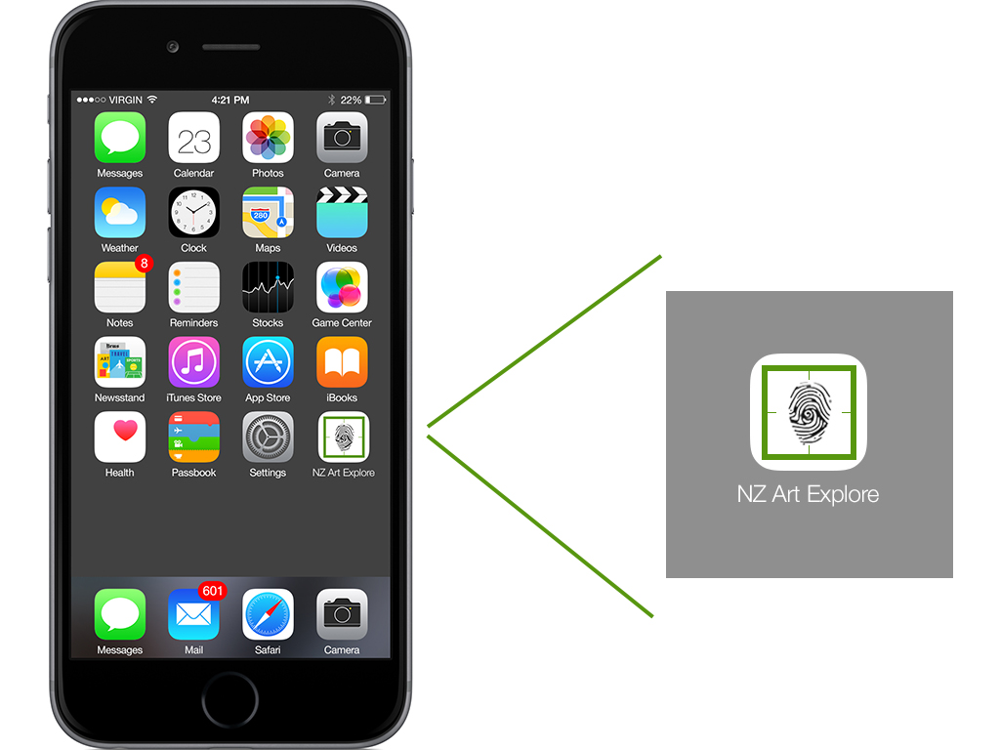
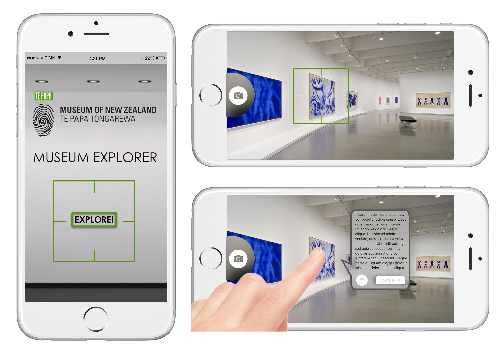
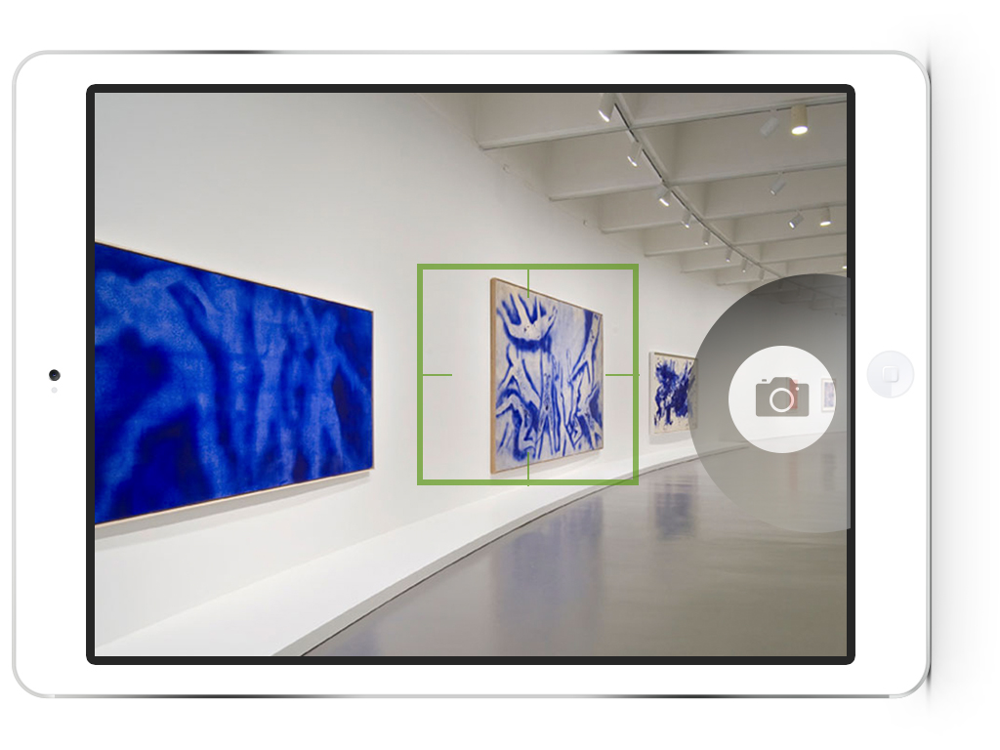
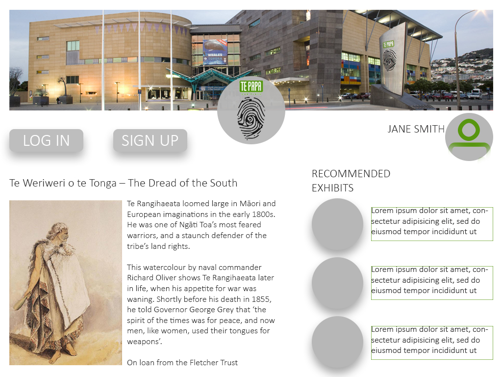
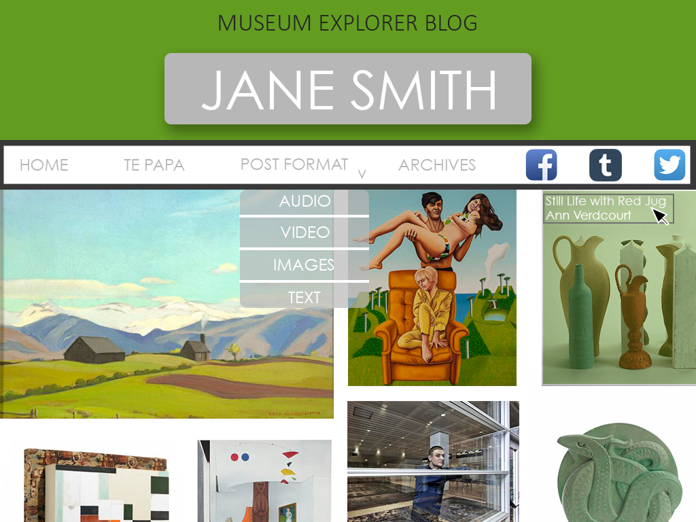

MUSEUM OF NEW ZEALAND TE PAPA TONGAREWA
AIM
Te Papa is a company that is built on culture, heritage and the exhibition of both past, present and future displays. Their ethos is something which I feel a great connection and understanding to, in particular were their three purposes: - to understand the past - enrich the present - meet challenges of the future In this project, I aim to create a web platform where Te Papa’s visitors internally and externally visiting the museum experience new ways of viewing exhibits both on show and off. These collections will thus be shared in the virtual world and easy-to-use.
CONCEPT
My concept that I have designed for Te Papa is to create a webpage that uses image recognition to identify different articles within an exhibition through an IMAGE RECOGNITION API on the users mobile phones and/or tablet. By scanning a room of an exhibition, the user can tap on a certain piece where the device will recognise what the article is. The user can then tap on the recognised image too recieve more information about the article but also lead the user to similar exhibits that are not currently on show at Te Papa. The user then has the choice to share this work on their user profile page (accessed on all three devices, including laptop/desktop) and to a social networking site. This allows the user to personalise the experience and increase visitor access to museum content.
PROTOTYPES
Smart Phone (iPhone 6)


Web Browser - view extra content

TECHNICAL
What is IMAGE RECOGNITION?
Image recognition is the process of identifying and detecting an object or a feature in a digital image or video. This concept is used in many applications like systems for factory automation, tollbooth monitoring, and security surveillance. Typical image recognition algorithms include:
Research on APIs
CamFind
I started off finding an app called CamFind “Simply take a picture of any object and CamFind uses mobile visual search technology to tell you what it is. The CamFind app provides fast, accurate results with no typing necessary. Snap a picture, learn more.” This app has a similar idea to what I aim to create for Te Papa, but accessing content relevant to Te Papa’s exhibits.
The app’s web page said that it uses CloudSight image recognition API to run the application.
CloudSight
It is an image recognition API where you send an HTTP request with your image and you'll receive a description of its contents.
Clarifai
This is another image recognition API which recognises all your images and tags them with word tags relevant to the image.
Google Cloud
 Google Cloud is another image recognition API that most people would have come across at least once and is used for the Google Image search. It takes the image and classifies it into different categories.
Google Cloud is another image recognition API that most people would have come across at least once and is used for the Google Image search. It takes the image and classifies it into different categories.